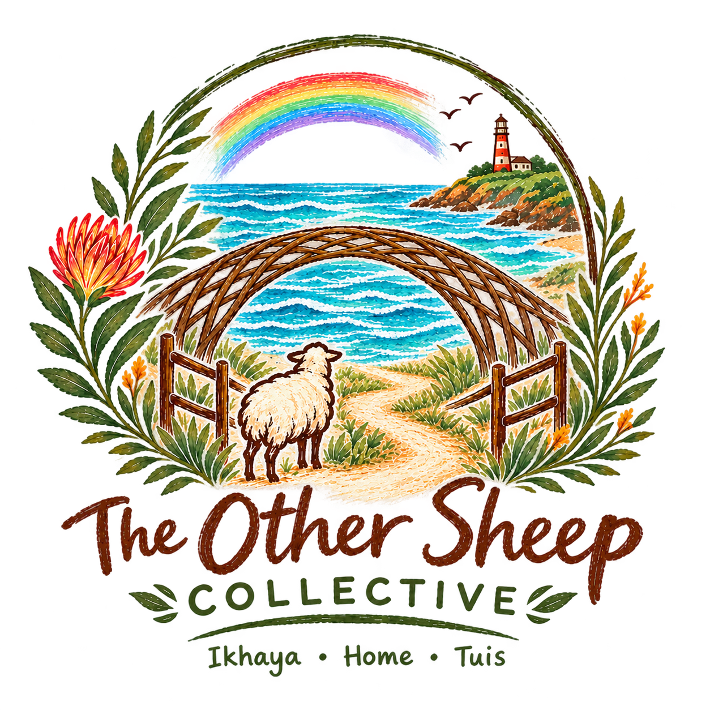

A Ministry of Our Calling
A place to land.
The circle is open.
There is room for you here.
Life can be complicated.
Sometimes we don't need someone to fix us—we need somewhere safe to land.
Whether you're carrying grief, loneliness, questions, church hurt, or simply looking for genuine connection, you're welcome here.
We'll gather once every month on a Saturday for coffee, tea, juice and connection.
This is a safe place to land— no matter your background, race, identity or religion.
Come as you are.
IKHAYA • HOME • TUIS
There is room for you here.